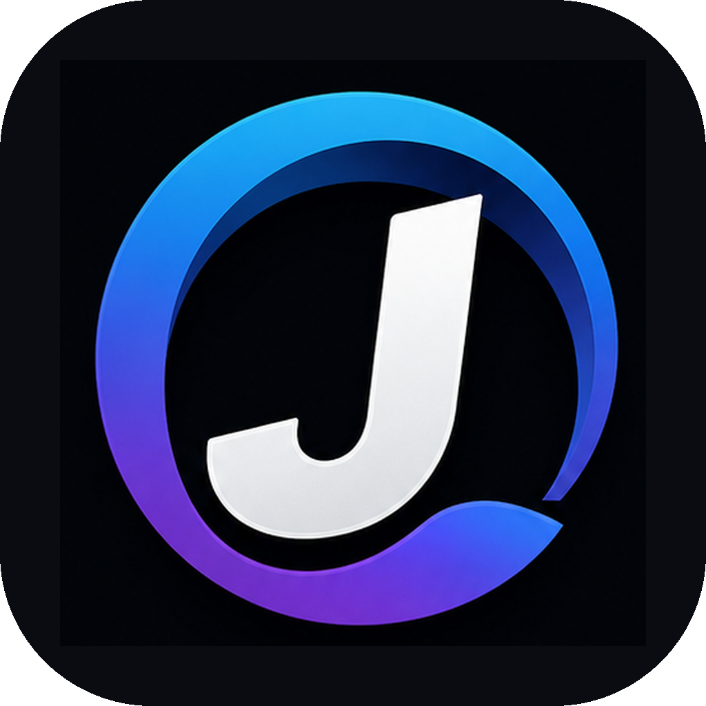

Light & Dark
Theme-Wechsel über die Einstellungen; der Light Mode ist auf eine weiße Oberfläche ausgelegt.

JuBrowse 6.0 betaJuGroup Browser Project · Beta
Dein Browser. Dein Look. Dein Homelab. Eine neue experimentelle Generation von JuBrowse für Windows, macOS und Linux.
⚠️ Frühe Beta – noch nicht als Hauptbrowser für sensible Aktivitäten empfohlen.
JuBrowse · Version 6.0 Beta · JuGroup
Beta Downloads
Die Installationsdateien erscheinen hier, sobald der plattformübergreifende GitHub-Build abgeschlossen und veröffentlicht wurde.
JuBrowse Beta
Deine Anmeldung wird persönlich geprüft. Du erhältst erst nach Freigabe eine Zusage.
Features
Theme-Wechsel über die Einstellungen; der Light Mode ist auf eine weiße Oberfläche ausgelegt.
PNG-Hintergrund und frei konfigurierbare Website-Shortcuts.
Lokale Dienste per Alias wie homelab:8123 aufrufen, nachdem die Homelab-IP hinterlegt wurde.
Separate Sitzung für Websites. Noch keine vollständige Betriebssystem-Sandbox.
Kleine Spiel-Demos sind in die Startseite integriert.
Chrome-Web-Store-Support und echter Netzwerk-Adblocker sind noch in Entwicklung.
Roadmap
Die Quellcode- und Build-Pipeline wird vorbereitet. Die Release-Seite zeigt verfügbare Downloads, sobald die Builds erfolgreich veröffentlicht wurden. Erweiterungen, Netzwerk-Adblock und eine echte OS-Sandbox sind noch nicht fertig.